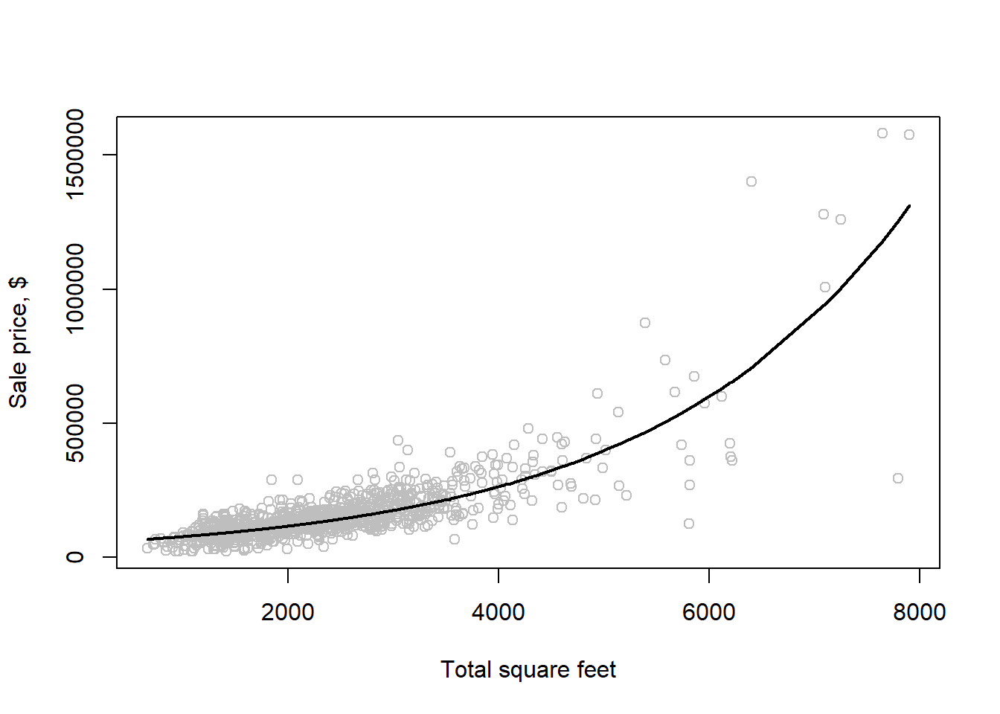

Summary. In simple linear regression, we use one independent variable to predict a dependent variable. The relationship is represented by a straight line with an intercept and a slope.
Introduction. We explore the fundamentals of the Simple Linear Regression Model, a method to understand the relationship between two variables. This model is foundational for more advanced analyses.
Key terms. The dependent variable\((y)\) is what we aim to predict; the independent variable, \(x\), explains \(y\).
The General Model
Assume a linear relationship between the conditional expectation of (y) and (x):
\[
y_i = \beta_1 + \beta_2 x_i + e_i \tag{1}
\]
\(\beta_1\): intercept
\(\beta_2\): slope
\(e_i\): error term with variance \(\sigma^2\)
\(i=1,\dots,N\): observation index
The predicted (estimated) value of \(y\) given \(x\) is:
\[
\hat{y} = b_1 + b_2 x \tag{2}
\]
Assumptions:
non-random (x);
constant error variance (homoskedasticity);
errors uncorrelated across observations;
\(E[e_i \mid x_i]=0\).
PART A. Example: Food Expenditure vs Income
# Recall to install the package PoEdata once if needed:install.packages("remotes")remotes::install_github("ccolonescu/PoEdata")
plot(food$income, food$food_exp,ylim=c(0, max(food$food_exp)),xlim=c(0, max(food$income)),xlab="weekly income in $100", ylab="weekly food expenditure in $",type="p")
library(PoEdata)mod1 <-lm(food_exp ~ income, data = food)b1 <-coef(mod1)[[1]]b2 <-coef(mod1)[[2]]smod1 <-summary(mod1)smod1
Call:
lm(formula = food_exp ~ income, data = food)
Residuals:
Min 1Q Median 3Q Max
-223.025 -50.816 -6.324 67.879 212.044
Coefficients:
Estimate Std. Error t value Pr(>|t|)
(Intercept) 83.416 43.410 1.922 0.0622 .
income 10.210 2.093 4.877 1.95e-05 ***
---
Signif. codes: 0 '***' 0.001 '**' 0.01 '*' 0.05 '.' 0.1 ' ' 1
Residual standard error: 89.52 on 38 degrees of freedom
Multiple R-squared: 0.385, Adjusted R-squared: 0.3688
F-statistic: 23.79 on 1 and 38 DF, p-value: 1.946e-05
Add the regression line to the scatter plot:
plot(food$income, food$food_exp,ylim=c(0, max(food$food_exp)),xlim=c(0, max(food$income)),xlab="weekly income in $100", ylab="weekly food expenditure in $",type ="p")abline(b1, b2)
Estimate Std. Error t value Pr(>|t|)
(Intercept) 83.41600 43.410163 1.921578 6.218242e-02
income 10.20964 2.093264 4.877381 1.945862e-05
PART C. MCQs
1) What relationship does simple linear regression assume between y and x?
Hint
Think straight line: one slope + one intercept.
β
2) In the model y = β₀ + β₁ x + ε, what does β₁ represent?
Hint
Δy for +1 in x.
3) In the model y = β₀ + β₁ x + ε, what does β₀ represent?
Hint
Value of y at x = 0.
4) A residual is defined as:
Hint
Actual − fitted.
5) Ordinary Least Squares (OLS) chooses coefficients to:
Hint
Squares penalize big errors more.
6) With an intercept in the model, OLS residuals:
Hint
∑eᵢ = 0 and Xᵀe = 0 when an intercept is included.
7) In simple OLS with an intercept, the fitted line passes through…
Hint
It goes through the means.
8) Which R function fits a simple linear regression model?
9) In summary(mod), the p-value for the slope tests:
10) The p-value is best described as:
11) A 95% confidence interval for β₁ is generally:
12) R² measures:
13) Adjusted R² differs from R² because it:
14) To make a prediction at x = x₀, you use:
Hint
Plug x₀ into the fitted line.
15) For OLS to be unbiased, a key assumption is:
16) Homoskedasticity means:
17) In summary(mod), the t value for β₁ equals:
Hint
Signal ÷ noise for the slope estimate.
18) The units of β₁ are best described as:
19) Rescaling x from dollars to hundreds of dollars will:
20) After fitting mod <- lm(y ~ x, d), the fitted value at x₀ is:
Hint
Use predict() with a small data frame for x₀.
üèÅ End of lab 7 üõë Remember to save your script üíæ
üß™ Lab 8 ‚Äî Prediction with the Linear Regression Model
üéØ Learning outcomes
By the end of this lab you will be able to:
Generate point predictions and quantify their uncertainty using R’s prediction framework
Distinguish between confidence intervals for average outcomes and prediction intervals for individual cases, and select the appropriate interval for applied research contexts
Assess the reliability of coefficient estimates through their variance-covariance structure
Recognize when predictions involve extrapolation beyond observed data and understand the associated risks
Handle non-linear relationships through quadratic and log-linear specifications
üß∞ Prerequisites
Knowledge: - Understanding of simple linear regression (Lab 7) - Familiarity with residuals, fitted values, and R² - Basic probability concepts (sampling distributions, standard errors)
Technical: - R (≥ 4.0) and RStudio installed - Completed Labs 1-7 - Required packages (install if needed):
food - household food expenditure and income (40 observations) br - Baton Rouge house prices and characteristics (1,080 observations) —
Note
Notation reminder: We use Greek letters (β1,β2​) for true population parameters and Latin letters (b1,b2​) for their sample estimates.
ŷ: predicted y value
\(\hat{\beta}\) or \(\hat{b}\) are sometimes used interchangeably with b for estimates
In Lab 7, we learned how to estimate relationships, But estimation is only half the story. In applied research, we often need to make predictions. In applied land economics research, prediction is crucial—whether forecasting property values, estimating rental yields, or projecting land use changes. This lab equips you with the tools to make robust predictions and quantify their uncertainty. Let’s begin with the basic prediction workflow.
Once we have estimated our regression coefficients \(b_1\) (intercept) and \(b_2\) (slope), we can use them to predict food expenditure for any given income level using the fitted regression equation (Eq. 2).
\[
\hat{y} = b_1 + b_2 x \tag{2}
\]
⚠️Unit conversion: In the following R script “income = $2000” is “income = 20” (the data is in hundreds of dollars).
#### Step 1: Fit the model (recap from Lab 7)library(PoEdata)data("food")# Estimate the food expenditure modelmod1 <-lm(food_exp ~ income, data = food)# Review estimatessummary(mod1)
Call:
lm(formula = food_exp ~ income, data = food)
Residuals:
Min 1Q Median 3Q Max
-223.025 -50.816 -6.324 67.879 212.044
Coefficients:
Estimate Std. Error t value Pr(>|t|)
(Intercept) 83.416 43.410 1.922 0.0622 .
income 10.210 2.093 4.877 1.95e-05 ***
---
Signif. codes: 0 '***' 0.001 '**' 0.01 '*' 0.05 '.' 0.1 ' ' 1
Residual standard error: 89.52 on 38 degrees of freedom
Multiple R-squared: 0.385, Adjusted R-squared: 0.3688
F-statistic: 23.79 on 1 and 38 DF, p-value: 1.946e-05
#### Step 2: Create a data frame with target income values# Scenario: Predict food expenditure for three household types# Note: income is in $100s, so divide actual income by 100newx <-data.frame(income =c(20, 25, 27))#### Step 3: Generate predictions# The predict() function takes two arguments:# 1. A fitted model object (mod1)# 2. A data frame with new x-values (must have same column names as original data)yhat <-predict(mod1, newx)# Give friendly names to each prediction so the output is easy to readnames(yhat) <-c("Low income = $2000", "Median income = $2500", "High income = $2700")# Show the predictionsyhat
Low income = $2000 Median income = $2500 High income = $2700
287.6089 338.6571 359.0764
#### Step 4: Interpret the results# A household earning $2,000/week is predicted to spend $287.60 on food per week.# This represents about 14.4% of their income (287.6/2000).# For the median household ($2,500/week), predicted food expenditure is $338.70,# or about 13.5% of income.# Observation: The proportion of income spent on food decreases as income rises—# this is consistent with Engel's Law from economics.
What’s Missing? Uncertainty!
These are point predictions—our single best guess at each income level. But how confident are we?
Consider the household earning $2,000/week: - We predict they’ll spend $287.60 on food - But there’s sampling uncertainty (our \(b_1\) and \(b_2\) are estimates) - And individual variation (not all $2,000/week households spend exactly $287.60)
Two types of intervals address these concerns:
Confidence intervals answer: “What’s the average food expenditure for all households at this income level?”
Prediction intervals answer: “What might one specific household at this income level spend?”
Understanding Prediction Uncertainty Through Sampling Variability
Our predictions depend entirely on our estimated coefficients (\(b_1, b_2\)). But these are sample estimates—if we collected a different dataset, we’d get different values and therefore different predictions.
Before making predictions, it’s important to understand that our coefficient estimates vary across samples. This matters for land economics applications: if we’re advising on property valuations, we need to know how sensitive our predictions are to sampling variation.
What is “sampling with replacement”?
Imagine our 40 observations are numbered balls in an urn. We draw a ball, record its data, put it back, then draw again. Some observations may appear multiple times in a bootstrap sample; others not at all. This mimics the randomness of drawing a new sample from the population.
The following bootstrap exercise (simulating sampling variability) demonstrates this variability by repeatedly resampling our data and re-estimating the model:
N <-nrow(food) # observationsC <-50# repeatsS <-38# subsample sizesumb2 <-0# sum of slopesfor (i in1:C){set.seed(3*i) # reproducible# Draw a bootstrap sample (with replacement) subsample <- food[sample(1:N, S, replace =TRUE), ] # bootstrap draw# Fit the model on this bootstrap sample mod2 <-lm(food_exp ~ income, data = subsample) sumb2 <- sumb2 +coef(mod2)[2] # store slope β2}print(sumb2 / C, digits =3) # average slope
income
9.89
Compare this bootsrap average (repeated samples) witht the original OLS regression output (from mod1) for \(b_2\). They should be similar, confirming that OLS is unbiased.
Estimated Variances and Covariance of Coefficients
The variance-covariance matrix tells us two crucial things: 1. Variances (diagonal): How much each coefficient estimate varies 2. Covariances (off-diagonal): How the estimates move together
This matters for prediction because uncertainty in \(\hat{y}\) depends on uncertainty in both coefficients and their correlation. For land valuation models, ignoring this covariance can lead to overconfident predictions.
Warning
Common Error in Applied Work Many analysts incorrectly calculate prediction variance as just \(\text{Var}(b_1) + x_0^2 \cdot \text{Var}(b_2)\), omitting the covariance term. This can make predictions appear less precise than they actually are.
The following R script extracts estimated variances and covariances from the object mod 1.
# coef variance–covariance matrix.# This is a 2×2 symmetric matrix:# - Top-left (1884.44): Var(b₁), variance of intercept# - Bottom-right (4.38): Var(b₂), variance of slope # - Off-diagonals (-87.78): Cov(b₁,b₂), covariance between coefficientsvcov(mod1)
(Intercept) income
(Intercept) 1884.44226 -85.903157
income -85.90316 4.381752
Having established how to assess coefficient stability, we now turn to cases where linear relationships are insufficient to capture real-world patterns in land markets.
Non-Linear Relationships - When Straight Lines Don’t Fit
In practice, many land economic relationships are non-linear: - Property prices don’t increase linearly with size (diminishing returns to scale) - Land values may have threshold effects near transport nodes - Agricultural productivity often follows diminishing returns
We’ll explore two common approaches Quadratic Models and Log-Linear Models.
PART A. Quadratic model - for U-shaped or inverted-U relationships
mod4 <-lm(log(price) ~ sqft, data = br) # log-linear fitb1 <-coef(mod4)[1] # interceptb2 <-coef(mod4)[2] # slope# Back-transform fitted curve to price scaleordat <- br[order(br$sqft), ] # sort by sqftmod4 <-lm(log(price) ~ sqft, data = ordat) # refit (ordered)plot(br$sqft, br$price, col ="grey",xlab ="Total square feet", ylab ="Sale price, $") # scatterlines(exp(fitted(mod4)) ~ ordat$sqft, lwd =2) # exp of fitted log-price

# ⚠️ Important: Simply exponentiating log predictions (exp(fitted)) gives the median, not the mean. For mean predictions, apply a smearing correction
Elasticity and marginal effect at the median price:
pricex <-median(br$price) # target price (median)sqftx <- (log(pricex) -coef(mod4)[1]) /coef(mod4)[2] # back out sqft from log model(DyDx <- pricex *coef(mod4)[2]) # marginal effect d(price)/d(sqft) = b2 * price
b1 <-coef(mod4)[1] # intercept of log(price) ~ sqftb2 <-coef(mod4)[2] # slope wrt sqftsqftx <-c(2000, 3000, 4000) # sqft pointspricex <-c(100000, exp(b1 + b2*sqftx)) # prices: first fixed at 100k; others from modelsqftx <- (log(pricex) - b1) / b2 # implied sqft from each price (now length = length(pricex))(elasticities <- b2 * sqftx) # elasticity = (dP/dx)*(x/P) = b2 * sqft
[1] 0.6743291 0.8225377 1.2338066 1.6450754
üí° Land Economics Application In rental valuation, we rarely observe rental income for vacant plots. Prediction intervals help quantify the uncertainty in forecasted rents, which is crucial for development feasibility analysis.
⚠️ Common Mistake Students often confuse confidence intervals (for the average) with prediction intervals (for individuals). In property valuation, this distinction matters: are you estimating the average price for houses of this type, or the likely sale price of one specific house?
PART C. MCQs
1) Using B₀ and B₁ primarily helps to:
Hint
Plug x into the fitted line.
2) The function lm() is used to:
Hint
It returns coefficients and a model object.
3) The function predict() mainly:
Hint
You pass newdata.
4) Coefficients are random because they:
5) Random subsamples help to:
6) vcov(model) returns:
7) Using data.frame() with predict() is to:
8) To request standard errors from predict.lm you set:
Hint
It returns fit and se.fit.
9) For a confidence interval for the mean response at x₀, use:
Hint
CI for E[y|x₀].
10) For an interval predicting an individual future y at x₀, use:
Hint
Includes error variance.
11) Prediction intervals are typically:
12) confint(model) returns:
13) For models with multiple predictors, newdata must:
Hint
Names must match the formula’s variables.
14) In a log-linear model log(y) ~ x, to back-transform the mean prediction you should:
Hint
Duan’s correction: mean(exp(ε̂)).
15) A bootstrap (or resampling with replacement) in R uses:
16) set.seed(123) is used to:
17) For out-of-sample performance, a good metric is:
Hint
Evaluate on held-out data.
18) Extrapolation risk means:
19) Variance of the predicted mean at x₀ depends on:
Hint
Use the variance–covariance of coefficients.
20) When predicting with factors, newdata must:
Hint
Unseen levels cause errors in predict().
üèÅ End of lab 8 üõë Remember to save your script üíæ
Formulate null and alternative hypotheses for regression coefficients
Compute test statistics and compare them to critical values
Calculate and interpret p-values for one-tailed and two-tailed tests
Understand the relationship between confidence intervals and hypothesis tests
Test linear combinations of parameters (e.g., predictions at specific x values)
Apply hypothesis testing to real-world land economics questions
Hypothesis Tests
üß∞ Prerequisites Knowledge:
Understanding of simple linear regression (Lab 7) Familiarity with coefficient estimates and standard errors (Lab 8) Basic understanding of statistical inference (confidence intervals, significance levels)
Technical:
R (≥ 4.0) and RStudio installed Completed Labs 1-8 Required packages:
In Lab 7, we estimated relationships. In Lab 8, we made predictions. But how do we know if our findings are statistically meaningful? Consider our food expenditure model:
We estimated that food spending increases by $10.21 for every $100 increase in income But is this effect real, or could it be due to random chance? Could the true effect actually be zero (no relationship)?
Hypothesis testing provides a formal framework to answer these questions.
üí° Land Economics Application When valuing agricultural land, we might find that proximity to roads increases land value by ¬£500 per meter. But before advising clients, we need to know: Is this effect statistically significant, or could it be sampling noise?
PART A - Hypothesis Tests for Individual Coefficients
We start with two competing claims: \[
H_0: \beta_k = c, \qquad H_A: \beta_k \ne c.
\]
Test statistic:
Under the null hypothesis, the test statistic follows a t-distribution: \[
t = \frac{b_k - c}{\operatorname{se}(b_k)},\quad t \sim t_{N-2}.\tag{6}
\]
where:
\(b_k\)​ is our estimated coefficient
\(c\) is the hypothesized value (zero in our case)
\(\operatorname{se}(b_k)\) is the standard error of \(b_k\)
\(N−K\) is degrees of freedom (N observations, K parameters)
Intuition: This ratio measures how many standard errors our estimate is away from the hypothesized value.
Example 1: Two-Tailed Test (Is there any effect?) Question: Does income affect food expenditure? (i.e., is \(β2≠0\)?)
# Set significance levelalpha <-0.05# Load data and estimate modellibrary(PoEdata); library(xtable); library(knitr)
Warning: package 'xtable' was built under R version 4.4.3
Warning: package 'knitr' was built under R version 4.4.3
# Extract coefficient and standard errorb2 <-coef(mod1)[["income"]]seb2 <-sqrt(vcov(mod1)[2,2])df <-df.residual(mod1)# Compute test statistict <- b2/seb2# Find critical value for two-tailed testtcr <-qt(1-alpha/2, df)t; tcr
Our test statistic is r round(t, 2), which is much larger than the critical value ±r round(tcr, 2)
We reject the null hypothesis
There is strong evidence that income affects food expenditure
Right‑tail and left‑tail versions:
Optional: üìä Visualizing the Test:
# Create visualization of t-distribution and testcurve(dt(x, df), from =-5, to =5, main ="Two-Tailed Hypothesis Test",xlab ="t-value", ylab ="Density",lwd =2)# Shade rejection regionspolygon(c(-4, seq(-4, -tcr, 0.01), -tcr),c(0, dt(seq(-4, -tcr, 0.01), df), 0),col ="red", border =NA, density =20)polygon(c(tcr, seq(tcr, 4, 0.01), 4),c(0, dt(seq(tcr, 4, 0.01), df), 0),col ="red", border =NA, density =20)# Mark critical values and test statisticabline(v =c(-tcr, tcr), col ="red", lty =2, lwd =2)abline(v = t, col ="blue", lwd =2)legend("topright", legend =c("Rejection region (α/2 each)", "Critical values", "Test statistic"),col =c("red", "red", "blue"),lty =c(1, 2, 1), lwd =2, bty ="n")
Example 2: One-Tailed Tests Sometimes we have a directional hypothesis based on economic theory. Right-Tailed Test: Is the effect of income on food expenditure greater than $5.50?
⚠️ Common Mistake: Students often confuse the direction of the inequality in \(H_0\)​ and \(H_A\). Remember: the alternative hypothesis represents what you’re trying to find evidence for.
PART B - The p‑Value Approach
The p-value represents the probability of observing a t-statistic as extreme as, or more extreme than, the one obtained from the sample, assuming the null hypothesis is true. In other words, it measures how compatible the data are with the null hypothesis. We reject the null hypothesis when the p-value is smaller than the chosen significance level (e.g., 0.05).
For a right-tailed test, the p-value corresponds to the area to the right of the calculated t-statistic. For a left-tailed test, it is the area to the left of the calculated t-statistic. For a two-tailed test, the total p-value is divided equally between both tails—p/2 in the left tail and p/2 in the right tail.
In R, p-values are obtained using the function pt(t, df), where t is the calculated t-ratio and df is the model’s degrees of freedom. For two-tailed tests, the result should be adjusted to account for both tails, typically using 2*(1 - pt(abs(t), df)).
Decision rule: Reject \(H_0\)​ if \(p-value<αp\) Fail to reject \(H_0\)​ if \(p-value≥αp\)
Common Significance Levels
α = 0.05 (most common): We’re willing to accept a 5% chance of incorrectly rejecting H₀
α = 0.01 (more conservative): Only 1% chance of Type I error
α = 0.10 (more lenient): Accept 10% chance of error
The smaller the p-value, the stronger the evidence against H₀
Computing p-Values:\(F_t\) stands for the cumulative distribution function (CDF) of the t-distribution.
Right‑tail: \(p = 1 - F_t(t)\) (probability in the upper tail)
Left‑tail: \(p = F_t(t)\) (probability in the lower tail)
Two‑tail: \(p = 2 * (1-F_t(|t|)\) (probability in both tails)
Example 1: Right-Tail TestQuestion: Is the marginal effect of income on food expenditure greater than $5.50?
# Left-tail test (H0: β2 ≥ 15)c <-15t <- (b2-c)/seb2p_left <-pt(t, df)cat("=== LEFT-TAIL TEST ===\n")
=== LEFT-TAIL TEST ===
cat("H0: β2 ≥", c, " (effect is at least $15)\n")
H0: β2 ≥ 15 (effect is at least $15)
cat("HA: β2 <", c, " (effect is below $15)\n\n")
HA: β2 < 15 (effect is below $15)
cat("Test statistic:", round(t, 3), "\n")
Test statistic: -2.288
cat("p-value:", round(p_left, 4), "\n")
p-value: 0.0139
cat("Decision at α=0.05:", ifelse(p_left <0.05, "✓ REJECT H0", "✗ FAIL TO REJECT H0"), "\n")
Decision at α=0.05: ✓ REJECT H0
cat("\nInterpretation:", ifelse(p_left <0.05, "Strong evidence that β2 < 15 (the effect is below $15)","Insufficient evidence that β2 < 15"), "\n\n")
Interpretation: Strong evidence that β2 < 15 (the effect is below $15)
Example 3: Two-Tail Test (Most Common)
Question: Is there any relationship between income and food expenditure?
cat("Decision at α=0.05:", ifelse(p_two <0.05, "✓ REJECT H0", "✗ FAIL TO REJECT H0"), "\n")
Decision at α=0.05: ✓ REJECT H0
cat("\nInterpretation:", ifelse(p_two <0.05, "Strong evidence of a relationship between income and food expenditure","Insufficient evidence of a relationship"), "\n\n")
Interpretation: Strong evidence of a relationship between income and food expenditure
\(p < 0.01\): Very strong evidence against \(H_0\)
​ \(0.01 ≤ p < 0.05\): Strong evidence against \(H_0\)
​ \(0.05 ≤ p < 0.10\): Weak evidence against \(H_0\)
​ \(p ≥ 0.10\): Insufficient evidence against \(H_0\)
⚠️ Common Student Mistakes to Avoid:
“p-value is the probability that H₀ is true” → ❌ WRONG!
Correct: p-value is the probability of getting our data if H₀ were true
“Fail to reject H₀ means H₀ is true” → ❌ WRONG!
Correct: We simply don’t have enough evidence to reject it
“Reject H₀ means HA is proven true” → ❌ WRONG!
Correct: We have strong evidence against H₀, supporting HA
Confusing the direction in one-tailed tests → Common error!
Right-tail: Testing if parameter is greater than c
Left-tail: Testing if parameter is less than c
PART C - Testing Linear Combinations of Parameters
We want to test hypotheses about combinations of parameters, not individual coefficients.Example: What is the expected food expenditure for a household earning $2,000/week (income = 20 in our units)?
\[
L = E(\text{food\_exp}\mid \text{income}=20) = \beta_1 + 20\,\beta_2
\]
cat(" Decision at α=0.05:", ifelse(p_value <0.05, "Reject H0", "Fail to reject H0"), "\n")
Decision at α=0.05: Reject H0
Interpretation: We fail to reject the null hypothesis. There is insufficient evidence that expected food expenditure differs from $250 for households earning $2,000/week.
PART D - MCQs
1) In hypothesis testing, H₀ represents:
Hint
Think of it as the “innocent until proven guilty” claim.
2) The test statistic t = (b - c) / se(b) measures:
Hint
It’s a standardized distance.
3) For a two-tailed test at α = 0.05 with df = 38, the critical value is approximately:
Hint
Use qt(0.975, 38) for the upper tail.
4) A p-value of 0.03 means:
5) We reject H₀ when:
6) For a right-tailed test, the p-value is calculated as:
Hint
We want the upper tail probability.
7) A 95% confidence interval for β₂ is [3, 8]. In a two-tailed test at α = 0.05, we would:
Hint
5 is inside the interval.
8) The same confidence interval [3, 8] tells us we would:
Hint
0 is outside the interval.
9) To test L = β₁ + 20β₂, we need:
10) The variance of L = a·X + b·Y includes the term:
Hint
Don’t forget the “2” and the product ab.
11) vcov(model) returns:
12) A Type I error occurs when:
Hint
It’s controlled by α.
13) The significance level α represents:
14) For H₀: β₂ = 0, if the 95% CI is [2.5, 7.5], then:
Hint
0 is not in the interval, so we reject.
15) In R, to get the p-value for a right-tailed test with t = 2.5 and df = 30:
16) A larger sample size generally:
Hint
More data = more precision.
17) The degrees of freedom for a simple regression (N=40) is:
Hint
df = N - K where K=2 (intercept + slope).
18) If |t| < t_critical, we:
19) A one-tailed test is appropriate when:
20) The t-distribution approaches the normal distribution as:
Hint
With large df, t ≈ z.
Summary
Hypothesis testing provides a formal framework for evaluating claims about parameters
Test statistics measure how far estimates are from hypothesized values in standard error units
p-values quantify the strength of evidence against H₀
Confidence intervals and hypothesis tests are mathematically equivalent
Linear combinations require accounting for covariances in variance calculations
üèÅ End of lab 9 üõë Remember to save your script üíæ
References
Acemoglu, D., Laibson, D., & List, J. A. (2015). Microeconomics (2nd ed.). Pearson. pp. 512–530. (For conceptual understanding of regression interpretation and causal inference basics.)
Colonescu, C. (2022). Principles of Econometrics with R (Version 2.0). Open Textbook Library. Chapters 7–9. (Used directly in labs, matches the PoEdata package and R examples.)
Gujarati, D. N., Porter, D. C., & Gunasekar, S. (2017). Basic Econometrics (5th ed.). McGraw-Hill Education. pp. 126–150, 175–195. (For theory and assumptions behind simple and multiple linear regression.)
Stock, J. H., & Watson, M. W. (2020). Introduction to Econometrics (4th ed.). Pearson. pp. 97–121, 145–165. (For hypothesis testing, p-values, and model diagnostics.)
Formative Test (This test does NOT carry any marks)


 or link:
or link: